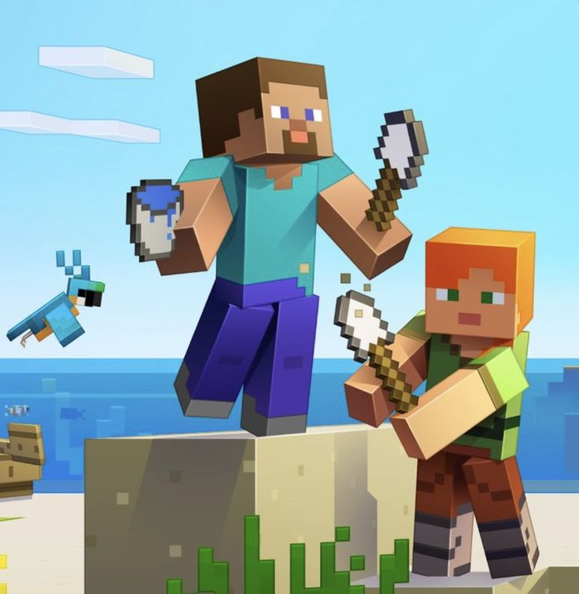

 Minecraft is basically the ultimate sandbox game where you can do literally anything you want. You start out in a blocky world with nothing but your bare hands, and from there, the possibilities are endless. Want to build a massive castle? Go for it. Prefer to dig straight down into the earth looking for diamonds? Sure, why not. You can farm, fish, breed animals, or just chill in creative mode and construct whatever wild ideas pop into your head. The best part is that there's no real "winning" – you set your own goals and play at your own pace. Whether you're into the survival grind or just vibing while building, Minecraft lets you be the architect of your own adventure.
What really makes Minecraft special is how it brings people together. You can play solo and lose track of time for hours, or jump into multiplayer servers and collaborate with friends to build insane structures or tackle challenges together. The community is absolutely massive, with YouTubers, streamers, and creators constantly coming up with new ideas and mods that keep the game fresh. Plus, Mojang keeps adding new features and updates, so there's always something new to explore. Whether you're a hardcore player hunting for rare blocks or someone who just enjoys the chill vibes of building and exploring, Minecraft has something for everyone. It's genuinely one of those games that's been around forever but never seems to get boring.